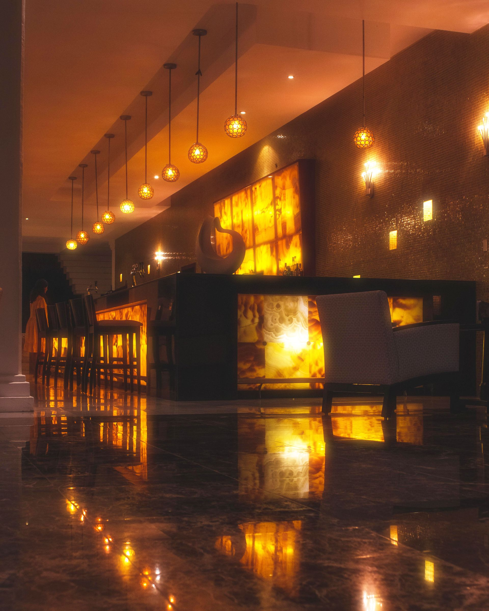
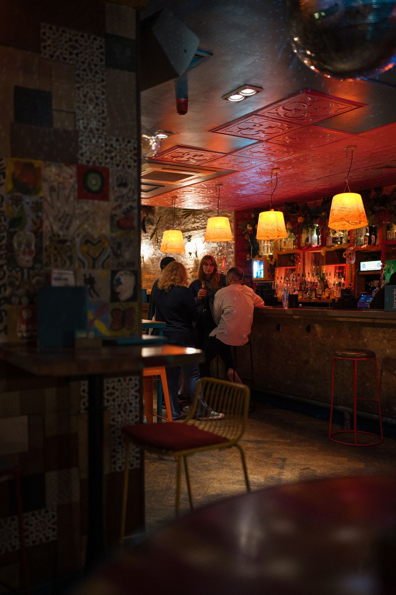
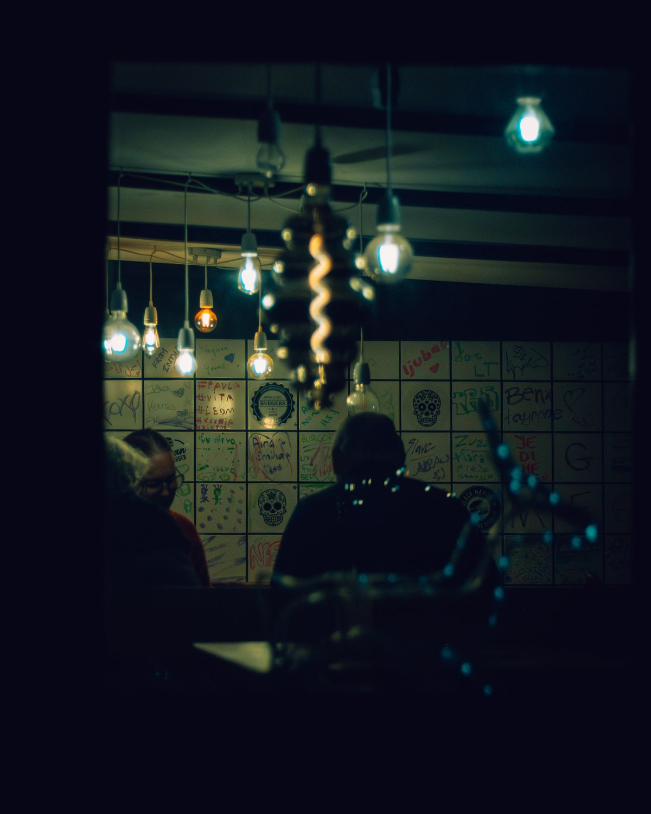

EL BOSQUE, CÁDIZLA LUNA — AFTER DARK

CAFÉ PUB
La Luna
Una pausa. Una conversación.
Nos vemos en La Luna.
11670 · EL BOSQUE
01 / LA LUNA
Hay planes que
no necesitan
muchas vueltas.
Café Pub La Luna, en Plaza El Andén, El Bosque. Un nombre para apuntar cuando apetece quedar y dejar que la conversación siga.
Tú pones la compañía.

02 / EL AMBIENTE
La luz baja.
La charla sigue.
Azul noche, luz ámbar y el gusto de estar en buena compañía. El espíritu de esta página, en imágenes.

Fuera, El Bosque.
Por un rato,
nada más.
Una mirada de inspiración: las fotografías de esta web son ilustrativas y no muestran el establecimiento.
03 / CAFÉ PUB
Dos palabras.
Un mismo nombre.
Café Pub
La Luna es un café-pub de El Bosque, en la sierra de Cádiz. Para conocer la carta y la oferta actual, consulta directamente en el establecimiento.
04 / ENCUÉNTRANOS
GUARDA ESTE NOMBRENos vemos